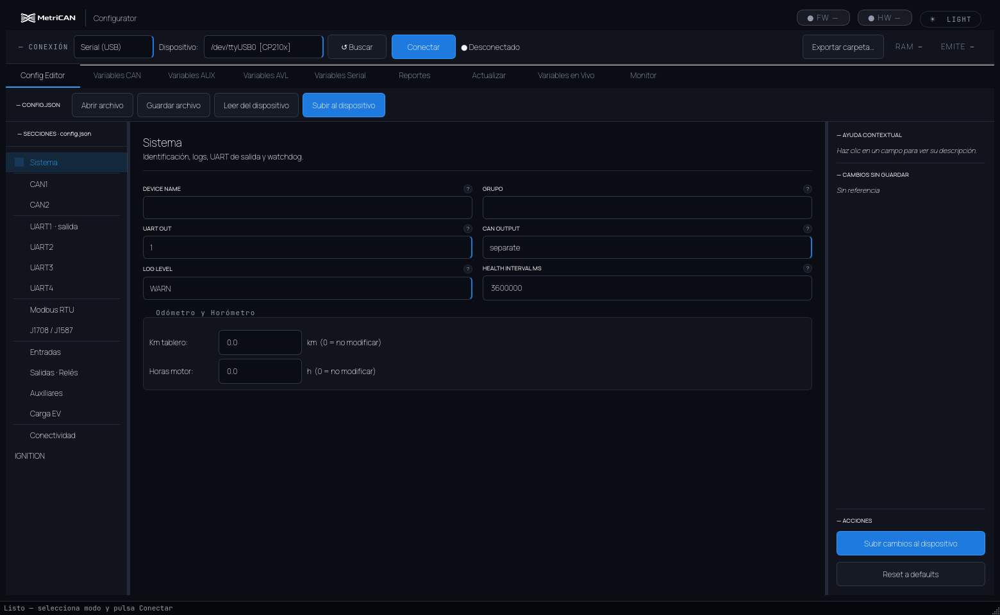
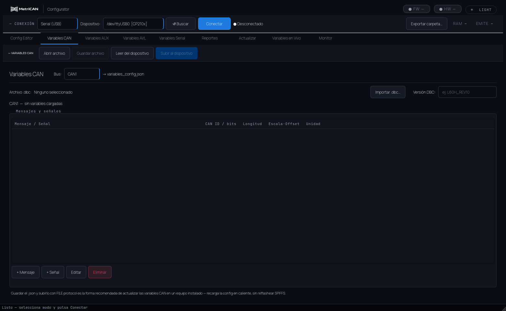
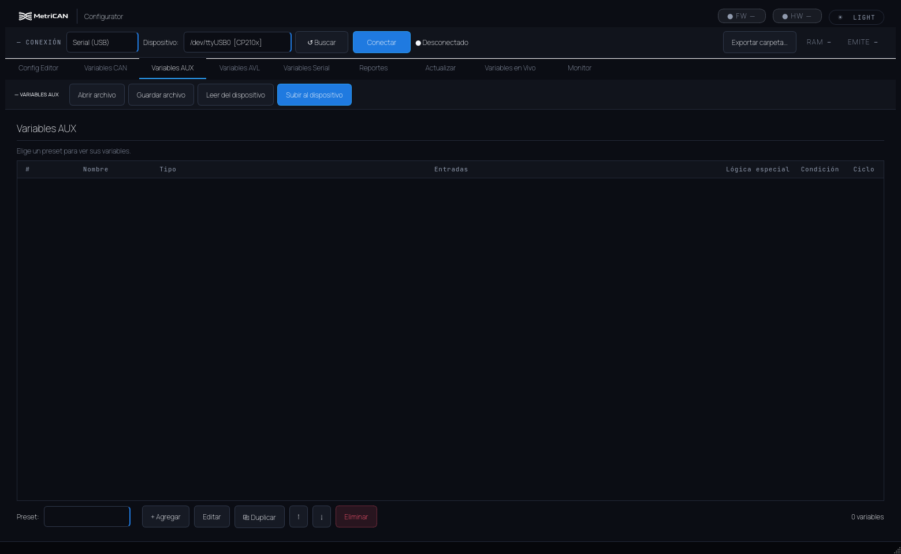
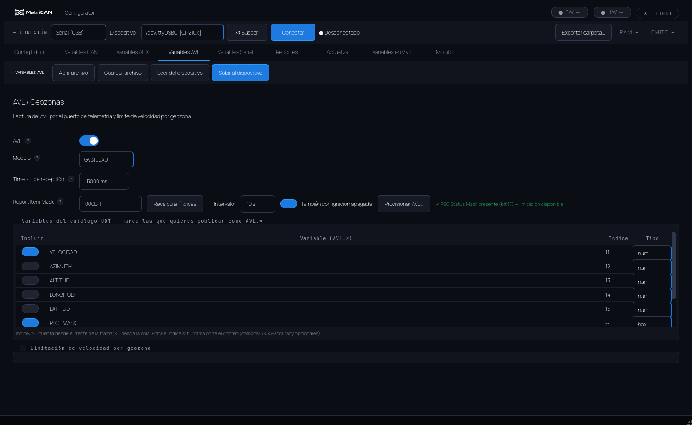
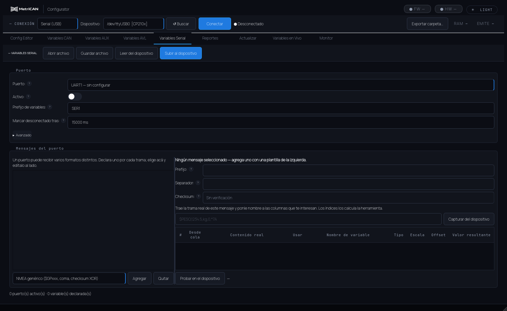
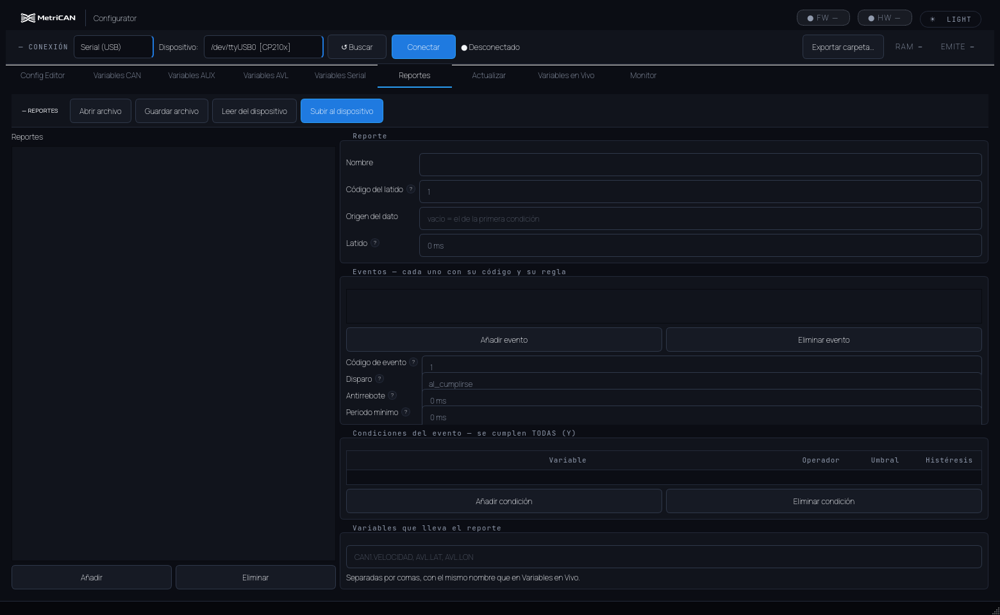
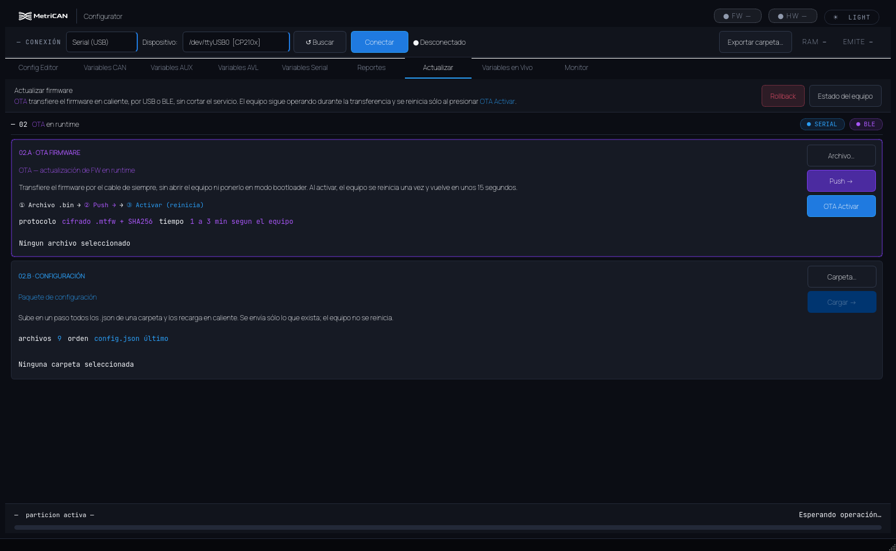
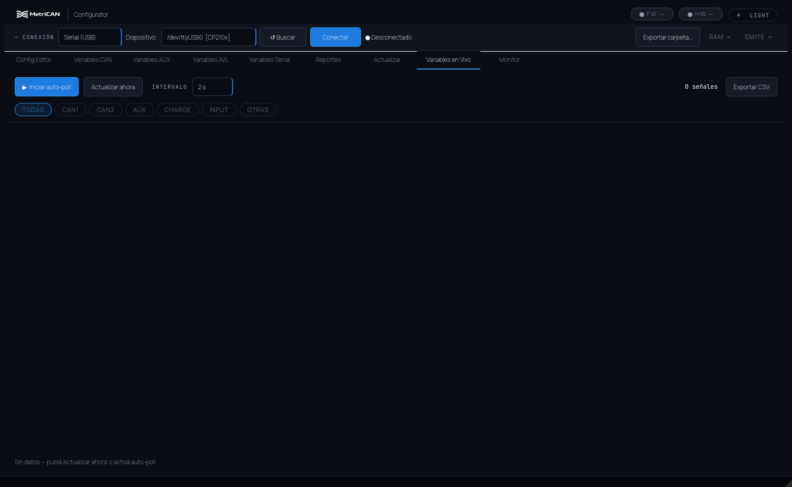
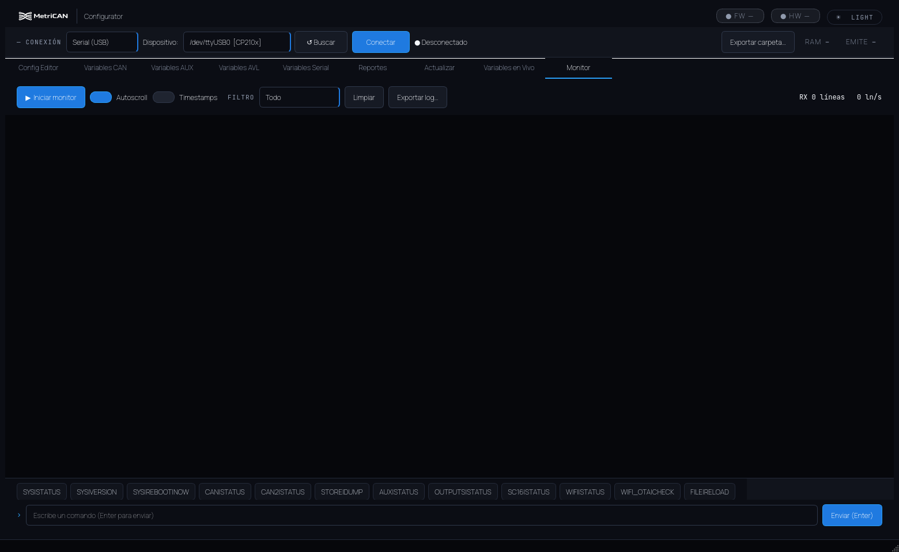

REV 02 · OCT 2026
Guía del Configurador
El Configurador es el programa de escritorio con el que se le habla a un MetriCAN: escribe la configuración del equipo, lee la que tiene cargada de verdad, actualiza el firmware por cable o por Bluetooth y muestra lo que está midiendo en este momento. Esta guía recorre sus nueve pestañas y no supone conocimiento previo de la herramienta.

Cuatro cosas, y una que no hace
| Hace | Qué significa |
|---|---|
| Escribe | La configuración del equipo: qué señales lee del vehículo, cómo se llaman, qué periféricos tiene, qué reglas aplica |
| Lee | Lo que el equipo tiene cargado de verdad, que no siempre es lo que uno cree |
| Actualiza | El firmware, por cable o por Bluetooth, sin desmontar el equipo del vehículo |
| Diagnostica | Muestra lo que el equipo está midiendo en este momento, variable por variable |
No fabrica el mapa de señales de un vehículo nuevo. Ese mapa —el .dbc— sale de un levantamiento sobre el vehículo. El Configurador lo importa, lo edita y lo sube, pero no lo inventa.
REV 02 · OCT 2026
La franja que no cambia nunca
Esta franja está en todas las pestañas y siempre hace lo mismo. Mientras el indicador diga Desconectado, las pestañas que leen del equipo no tienen nada que leer: varias se ven vacías por eso, y no porque el equipo esté mal.
| Lo demás de la barra | Para qué está |
|---|---|
| Exportar carpeta… | Guarda en disco todo lo que el equipo tiene cargado. Es el respaldo, y es lo que hay que hacer antes de tocar nada en un equipo instalado |
| RAM | Avisa si la memoria libre del equipo conectado está cayendo |
| EMITE | Dice si la telemetría está saliendo |
| FW · HW | Versión de firmware y de hardware del equipo conectado |
| LIGHT | Cambia entre tema claro y oscuro. Sólo estético |
REV 02 · OCT 2026
Dos mundos que no hay que confundir
Casi todas las pestañas de edición llevan la misma fila de cuatro botones. Dos trabajan contra el disco de tu PC y dos contra el equipo; confundirlos es el error más caro de esta herramienta.
El disco
Los .json guardados: respaldos y configuraciones de partida.
La pantalla
Lo que estás editando. No es ni el disco ni el equipo.
El equipo
Lo que de verdad está funcionando ahí afuera.
| Botón | De dónde a dónde |
|---|---|
| Abrir archivo | del disco → a la pantalla |
| Guardar archivo | de la pantalla → al disco |
| Leer del dispositivo | del equipo → a la pantalla |
| Subir al dispositivo | de la pantalla → al equipo |
Lo que está en pantalla no llega al equipo hasta que aprietas Subir. Y lo que el equipo tiene no aparece en pantalla hasta que aprietas Leer. Un equipo puede quedar con una configuración a medias si se sube una pestaña y se olvida otra.
En un equipo instalado: primero Exportar carpeta…, después Leer del dispositivo, y recién entonces editar. Son cinco segundos, y es lo único que permite volver atrás.
REV 02 · OCT 2026
La identidad del equipo
Aquí se define qué es este equipo. La columna de la izquierda son las secciones y cada una gobierna una parte del aparato; al centro, los campos de la sección elegida.

Al hacer clic en un campo aparece su descripción, y debajo la lista de cambios sin guardar. Si esa lista tiene cosas, todavía no están en el equipo.
REV 02 · OCT 2026
Qué gobierna cada una
| Sección | Qué se define ahí |
|---|---|
| Sistema | Nombre y grupo del equipo, por qué puerto sale la telemetría, nivel de log y cada cuánto manda el latido de salud. También el odómetro y el horómetro de arranque: poner aquí el kilometraje del tablero hace que el equipo cuente desde ahí |
| CAN1 · CAN2 | Los dos buses: velocidad, cada cuánto emite, cuánto espera antes de dar una señal por rancia, y qué señales disparan emisión inmediata. Aquí también se pone un bus en modo Mobileye cuando el vehículo lleva cámara ADAS |
| UART1 … UART4 | Los cuatro puertos serie: a qué velocidad va cada uno y qué rol tiene — cámara de fatiga (DSM), módem, Modbus, periférico genérico |
| Modbus RTU | El periférico industrial por RS485, con su protocolo propio |
| J1708 / J1587 | El bus pesado legacy de los vehículos de flota antiguos |
| Entradas | La entrada física, típicamente la ignición |
| Salidas · Relés | Las reglas de los dos relés |
| Auxiliares | Las variables calculadas: horómetros, consumos, odómetro propio |
| Carga EV | El ciclo de carga en vehículos eléctricos |
| Conectividad | WiFi y Bluetooth |
| IGNITION | A qué se le aplica el corte por ignición |
Todo lo que el equipo lee —el bus, una cámara, un periférico serie, la entrada física, una sonda— se convierte en una variable del sistema, con su nombre y su unidad. Desde ahí todas valen lo mismo: viajan en la trama, pueden disparar un reporte, pueden accionar un relé y pueden alimentar un cálculo. Por eso Salidas · Relés y Auxiliares pueden referirse a cualquier variable, venga de donde venga.
El corte por ignición se elige por separado para la telemetría del bus, para las variables calculadas y para los avisos de la cámara, porque equivocarse cuesta distinto en cada uno: callar un bus deja el equipo mudo; callar un aviso de cámara sólo pierde ese aviso.
REV 02 · OCT 2026
El mapa del vehículo
Esto es lo que convierte un equipo genérico en el equipo de ese camión: qué identificador del bus lleva cada dato, en qué bits está, con qué escala y qué nombre tiene. Se elige el Bus —CAN1 o CAN2, cada uno con su propio mapa—, se importa el .dbc del levantamiento y la tabla queda armada con los mensajes y, dentro de cada uno, sus señales. Las señales no se escriben a mano.

De fábrica el equipo ya sabe leer J1939, el estándar de los vehículos pesados: revoluciones, velocidad, temperaturas, combustible. Eso funciona sin que nadie traduzca nada, y es el piso.
El techo es esta pestaña. Lo que cada fabricante publica fuera del estándar —el estado de carga de un eléctrico, la temperatura de cada celda, el nivel de un estanque, una señal de un carrozado— no está en J1939 y no hay catálogo que lo cubra. Se levanta del vehículo y se carga aquí como traducción propia, y desde ese momento el equipo lo entrega igual que lo estándar. Dos equipos con el mismo firmware y traducciones distintas son dos productos distintos.
Las señales salen al aire en el orden en que están aquí. Quien recibe lee por posición: mover una señal de sitio o agregar una en medio corre todas las que vienen detrás y rompe la plataforma del cliente sin ningún error visible. Agregar al final es barato; insertar en medio no lo es.
REV 02 · OCT 2026
Lo que el equipo calcula
Aquí viven las variables que el equipo calcula en vez de leer: horómetros, consumo de combustible, consumo en ralentí, odómetro propio, contadores. Se parte de un preset según el tipo de vehículo —combustión, eléctrico o híbrido—, que ya trae el juego completo, y desde ahí se ajusta.

- Una variable que no cumple su condición no publica número
- El consumo en ralentí sólo sale mientras el vehículo está en ralentí
- El acumulado no se pierde: simplemente no se publica
- El horómetro y el odómetro propios se inhiben si el bus publica los del fabricante
- No compiten con el dato original: lo suplen cuando no existe
Igual que en Variables CAN, el orden de esta lista es el orden de los campos en la trama auxiliar.
REV 02 · OCT 2026
El módem y las zonas
Dos trabajos en una sola pestaña: de qué le hace caso el equipo al mensaje del módem, y qué recintos geográficos conoce.

- Qué campos trae el mensaje del Queclink y cómo se llaman: posición, velocidad GNSS, rumbo, altitud, fecha y hora, zonas
- Recalcular índices reordena cuando se agrega o se quita un campo
- Provisionar AVL… deja el módem configurado
- La lista de recintos, cada uno con su límite de velocidad
- Importar KML… toma las zonas dibujadas en Google Earth; Importar puntos…, una lista de coordenadas
- Leer del equipo trae las que ya tiene; Guardar geofences.txt… las deja en un archivo
REV 02 · OCT 2026
Periféricos sin firmware nuevo
Esta pestaña es la que permite conectar una báscula, un caudalímetro o un lector de tarjetas sin pedir una versión nueva de firmware: aquí se describe el formato de lo que manda el aparato, y sus datos pasan a ser variables como cualquier otra.

Describir un aparato es acertar a la primera o no enterarte de que fallaste, porque un aparato mal descrito no da error: da una columna vacía para siempre. Por eso la pestaña trae dos botones para comprobarlo antes de guardar nada.
Capturar del dispositivo enseña, tal cual, lo que está entrando por ese puerto en este momento. Sirve para dos preguntas que desde fuera se ven igual —las dos son silencio—: ¿está el aparato conectado? y ¿está conectado pero hablamos a velocidades distintas? Si no aparece nada, el problema es el cable o la velocidad, y no vale la pena seguir escribiendo la descripción.
Probar en el dispositivo toma la descripción que acabas de escribir, se la aplica a lo que está llegando y te enseña el valor que saldría. Si ves el número que esperabas, la descripción es correcta. Si ves un aviso de que no es número, no lo es — y lo sabes ahora y no dentro de un mes.
REV 02 · OCT 2026
Qué se manda, y cuándo
Define los eventos: qué manda el equipo cuando pasa algo, además de la telemetría periódica. Se añaden eventos y, dentro de cada uno, las condiciones que lo disparan.

| Bloque | Qué se declara |
|---|---|
| Reporte | Su nombre, el código del latido, el origen del dato y cada cuánto se repite |
| Eventos | Cada uno con su código, su disparo, su antirrebote y el periodo mínimo entre dos |
| Condiciones | Variable, operador, umbral e histéresis. Se cumplen todas |
| Variables | Las que viajan en el reporte, con el mismo nombre que en Variables en Vivo |
REV 02 · OCT 2026
Firmware y configuración en caliente
La pestaña tiene dos bloques independientes, y conviene no confundirlos. Los dos trabajan por SERIAL o por BLE: el selector está arriba a la derecha.

- Tres pasos, en este orden: Archivo… → Push → → OTA Activar
- El equipo sigue operando durante la transferencia y no entra en modo bootloader
- Se reinicia sólo al activar, y vuelve en unos 15 segundos
- El archivo es un .mtfw: el firmware va cifrado dentro, y el equipo comprueba que llegó íntegro antes de instalarlo
- Rollback vuelve a la versión anterior; Estado del equipo dice en qué partición está corriendo
- Dos pasos: Carpeta… → Cargar →
- Sube de una vez todos los .json de una carpeta
- Sólo se envía lo que exista en la carpeta
- No reinicia el equipo — y justamente por eso hay que reiniciarlo
Y justamente por eso hay que reiniciarlo: mientras no arranque de nuevo, lo que acabas de subir está en el equipo pero no está en uso. El Configurador avisa con REQUIERE_REINICIO cuando el campo que tocaste es de los que esperan al arranque, que son casi todos.
REV 02 · OCT 2026
Los tres caminos para dejar un equipo listo
Según de qué se parte, el camino es distinto. En terreno sólo se cargan dos cosas: firmware nuevo (.mtfw) y configuración — ésta por carpeta completa o campo por campo.
- Cuando ya está en el vehículo y hay versión nueva
- Pestaña Actualizar, bloque 02.A, con el .mtfw del paquete
- Al terminar, cargar la configuración y reiniciar
- El OTA no toca la configuración: lo que había sigue ahí
- Cuando el firmware se queda y cambia el vehículo
- Pestaña Actualizar, bloque 02.B, con la carpeta de configuración completa
- Sube todos los .json de una vez
- Y después reiniciar: el equipo guarda los ficheros al instante, pero no los usa hasta arrancar de nuevo
- Cuando sólo cambia un parámetro
- Pestaña Config Editor: cambiar el campo y Subir al dispositivo
- Para un parámetro suelto no hace falta mover la carpeta entera
- Después, Leer del dispositivo para comprobar que entró
| Del paquete de entrega | Qué lleva, y en qué camino se usa |
|---|---|
| OTA/ | El .mtfw de la versión nueva. Es el camino A, por el bloque 02.A |
| CONFIG/ | Los .json del vehículo. Es el camino B, por el bloque 02.B |
El equipo guarda los ficheros nuevos al instante, pero sus módulos internos —los buses, los puertos serie, la ignición, los relés, los auxiliares— leen la configuración una sola vez, al arrancar, y siguen trabajando con la que leyeron. Por eso en A y en B hay que reiniciar al terminar, y no sólo cuando cambió algo grande.
Si lo que cambió fue la velocidad de un bus, la comprobación es mirar la línea de arranque: tiene que decir la velocidad que pusiste. Si dice otra, la configuración no entró en uso.
REV 02 · OCT 2026
Qué está midiendo ahora
La foto completa de lo que el equipo tiene medido en este momento, con el valor de cada variable y su antigüedad. Iniciar auto-poll la refresca sola cada pocos segundos; Actualizar ahora pide una foto suelta; Exportar CSV se lleva la tabla.

Los filtros de arriba —TODAS, CAN1, CAN2, AUX, CHARGE, INPUT, OTRAS— separan por origen, que es justo lo que hace falta para contestar ¿esto viene del bus o lo está calculando el equipo?
Una variable que nunca llegó, una que llegó hace media hora y una que está fresca se ven distintas aquí, y se ven iguales en cualquier otro sitio.
REV 02 · OCT 2026
Hablarle al equipo
La consola. Muestra todo lo que el equipo escribe por el cable y permite mandarle órdenes. Iniciar monitor abre el flujo; Autoscroll y Timestamps son comodidad; FILTRO acota lo que se ve; Limpiar vacía la pantalla y Exportar log… se lleva lo capturado a un archivo.

Abajo están los atajos a las preguntas más frecuentes: estado del sistema, versión, reinicio, estado de cada bus CAN, volcado de variables, estado de los auxiliares, de los relés y del WiFi, y recarga de configuración. Y una línea para escribir cualquier orden a mano.
Arriba a la derecha, RX cuenta las líneas recibidas y ln/s el ritmo. Un equipo que no escribe nada no es necesariamente un equipo muerto, pero es la primera sospecha.
REV 02 · OCT 2026
Lo que cuesta caro aprender solo
- La versión se pregunta, no se supone. FW arriba a la derecha, o el atajo de versión en el Monitor. Diagnosticar sobre la versión equivocada es perder la tarde
- Una configuración que no entró se ve igual que una que entró. La única diferencia visible está en el equipo: después de subir, leer de vuelta
- El reinicio no es opcional cuando cambia el bus. El controlador de CAN sólo se inicializa al arrancar; la línea de arranque tiene que decir la velocidad que pusiste
- Antes de tocar un equipo instalado, respaldar. Exportar carpeta… cuesta cinco segundos
- El orden de las variables es un contrato. La plataforma lee por posición: insertar una señal en medio no produce ningún error, produce datos equivocados. Comprobar el orden real en el equipo, no el del archivo
- Un campo vacío y un cero no son lo mismo. El equipo deja el campo vacío a propósito cuando el dato no llegó, llegó hace demasiado o el vehículo lo declara no disponible. Un cero es una medición; un vacío es la ausencia de medición
- El silencio de un puerto serie tiene dos causas. El aparato no está conectado, o está conectado y las velocidades no coinciden: Capturar del dispositivo es lo que las separa
- Al reportar un problema, adjuntar el log. Exportar log… del Monitor y la exportación de Variables en Vivo
Dónde sigue lo demás
Qué hace cada funcionalidad del equipo está en GF-MC-2026 · Guía de Funcionalidades. Ésta es el cómo se pide; aquélla, el qué hace.
El detalle de cada comando del sistema —las respuestas de estado, los avisos WARN|, los comandos SYS|, CAN|, AUX|, FILE| y OTA|, con su formato y qué significa cada campo— está en RC-MC-2026 · Referencia de Comandos y Avisos. Es el documento al que se acude cuando el Monitor dice algo que no se reconoce.
¿Una configuración que no logras armar?
Envíanos la carpeta de Exportar carpeta… y el log del Monitor. Con eso se reproduce el caso sin tener el equipo delante.